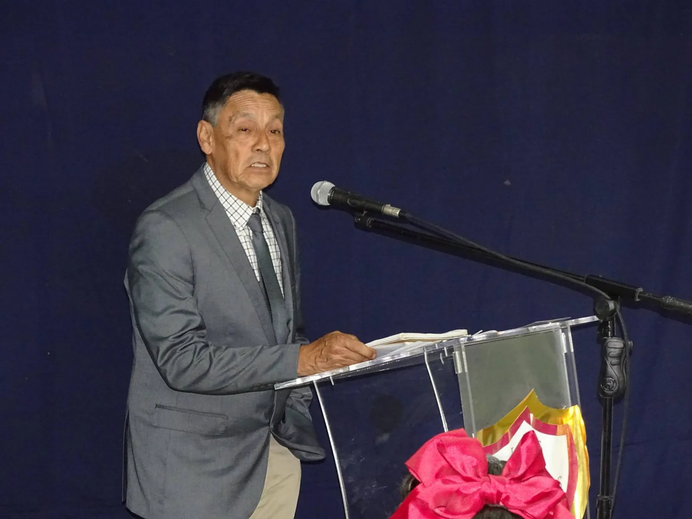
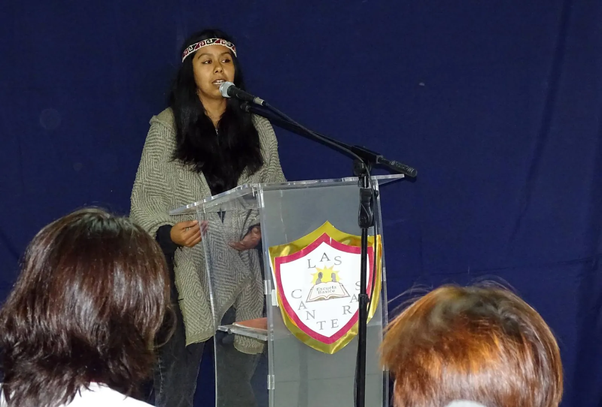
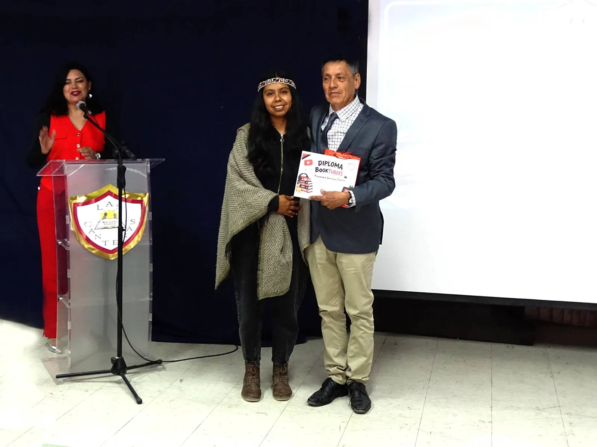
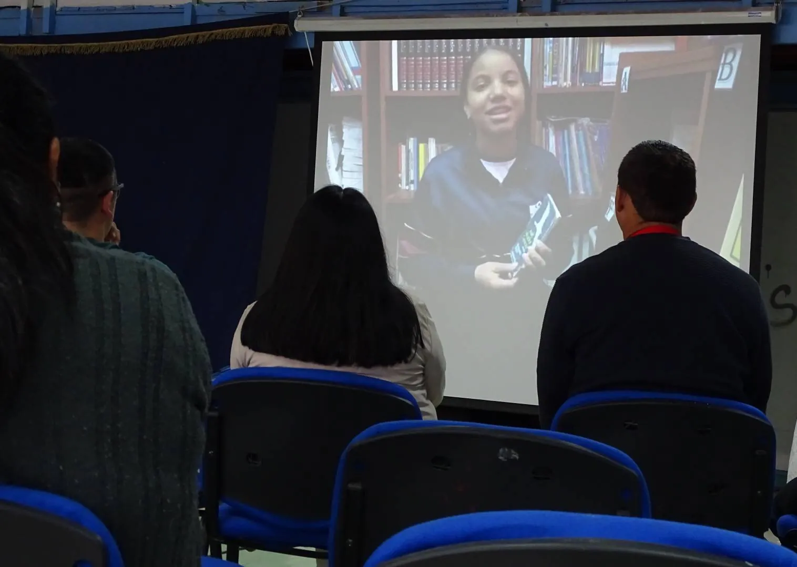
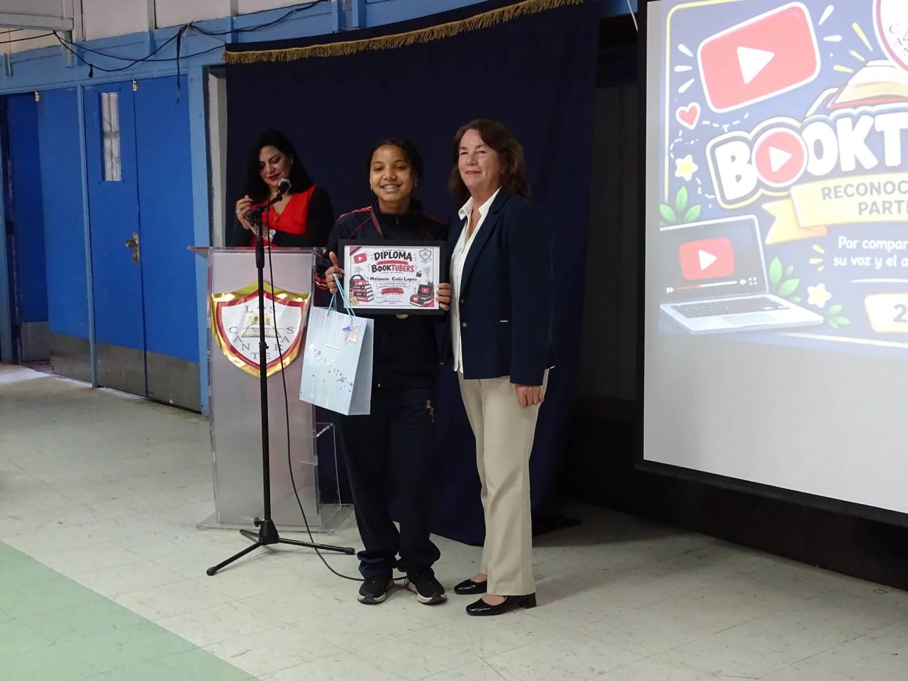
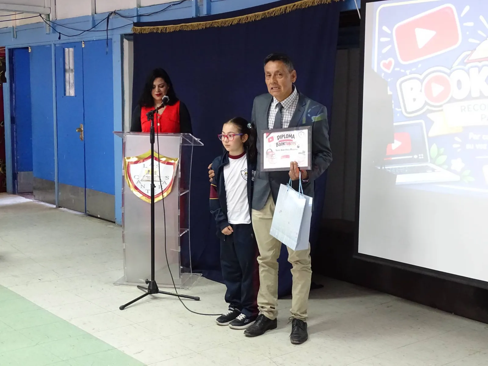
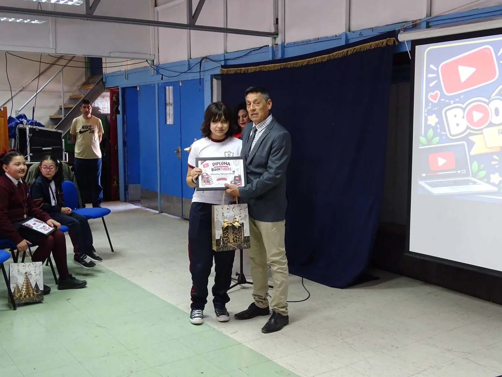
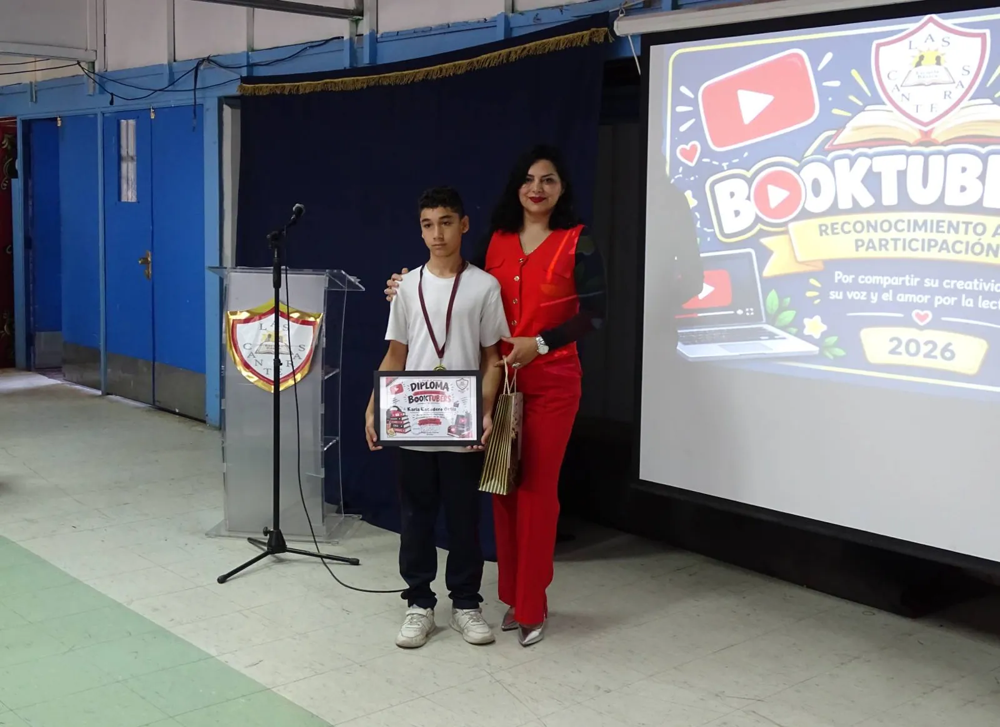
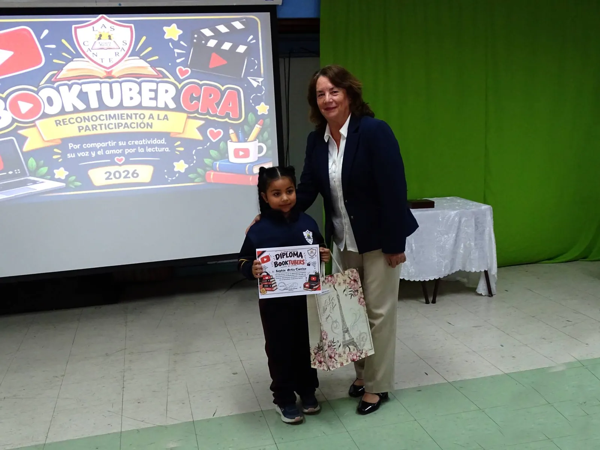

En una ceremonia realizada el 23 de octubre, en el marco del Día de las Bibliotecas, la Escuela Las Canteras de Copiapó reconoció la participación de cinco estudiantes en la sexta versión del Concurso Nacional Booktubers 2026, organizado por el Ministerio de Educación a través del programa Bibliotecas Escolares CRA.
La convocatoria nacional reunió a 4.460 estudiantes de las 16 regiones del país, quienes elaboraron videos para recomendar libros y comunicar sus experiencias de lectura. La participación de las representantes de Las Canteras recibió una felicitación del Departamento Provincial de Educación Copiapó–Chañaral, mediante su equipo CRA Provincial.
Una comunidad reunida en torno a los libros
La jornada reunió al equipo directivo, docentes, asistentes de la educación, estudiantes y familias. El director de la escuela, Diego Araya Fuentes, dirigió unas palabras a los asistentes durante la ceremonia, que también destacó la labor de la Biblioteca CRA como espacio para descubrir historias, compartir lecturas y desarrollar la imaginación.
Cinco participantes, cinco historias
Florencia Isidora Marín Reiners, de 4.º B, recomendó La cama mágica de Bartolo, de Mauricio Paredes, una historia de imaginación y aventura. Melannie Sofía Gelis López, quien participó representando a 8.º A, presentó Juan Salvador Gaviota, de Richard Bach, sobre la perseverancia y la superación personal.
Sara Sánchez Aldana, de 8.º A, compartió Crónicas de la Torre, de Laura Gallego, una obra de fantasía que aborda el autoconocimiento y la identidad. Valentina Ignacia Villegas Vedia, de 8.º A, eligió Matilda, de Roald Dahl, una historia que celebra la curiosidad, la inteligencia y el poder de los libros.
Karla Escudero Ortiz, de 8.º B, presentó una lectura relacionada con Malala Yousafzai, destacando el derecho a la educación y la igualdad de oportunidades. Los trabajos mostraron cómo la lectura y las herramientas digitales pueden complementarse para comunicar ideas y recomendar historias a otras personas.
Reconocimientos y participación de las familias
Durante la actividad se proyectaron los videos y se entregaron diplomas y distinciones a las participantes. En la ceremonia colaboraron integrantes de Biblioteca CRA: Verónica Concha, Alejandrina Álvarez, Marcos Serrano y María Teresa Navea Araya.
La jornada también incluyó expresiones artísticas, entre ellas la declamación de un poema por parte de la apoderada Casandra Serrano Cortés, cuya intervención destacó la participación de las familias en la vida cultural de la escuela.
Un reconocimiento que trasciende la escuela
La comunidad educativa agradeció las felicitaciones enviadas por el equipo CRA Provincial del Departamento Provincial de Educación Copiapó–Chañaral y por Miguel Salamanca Manríquez, jefe técnico pedagógico de dicho organismo, quienes valoraron la participación de las estudiantes y el compromiso del establecimiento con el fomento lector.
Leer, crear y compartir en la era digital
El concurso Booktubers es una oportunidad para integrar comprensión lectora, expresión oral, creatividad y competencias digitales. La Escuela Las Canteras espera que la experiencia anime a más estudiantes a descubrir libros y participar en futuras convocatorias.
Felicitamos a Florencia, Melannie, Sara, Valentina y Karla por su dedicación, así como a sus familias y docentes por acompañarlas. Cada libro abre una puerta al conocimiento y cada estudiante tiene una voz que merece ser escuchada.
Galería fotográfica









Registro fotográfico: Escuela Las Canteras de Copiapó.